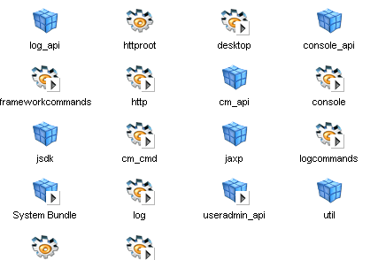
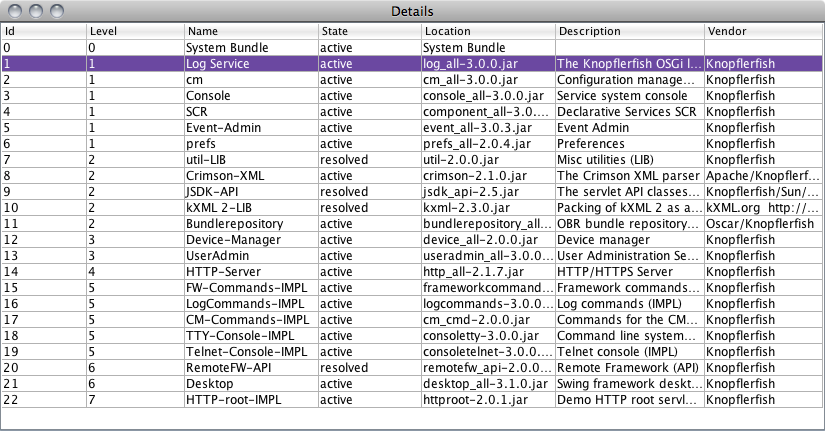
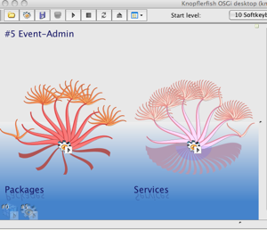

The Knopflerfish Desktop
The Knopflerfish OSGi Desktop displays a graphical overview of the OSGi
framework.
Description
The Knopflerfish OSGi Desktop displays a graphical overview of the OSGi
framework. Most common operations as install, start, stop and update can
be performed on bundles using the desktop. Additionally, bundle and service
detail information is shown, and an experimental "Save deploy archive" is
incluced.
The desktop is a standard OSGi bundle, using Swing. The desktop is primarily
designed to manage a locally running framework, but can be used to control a
remote framework, using the optional SOAP bundles.
Consult the description of how to activate the "Remote framework..." menu item.
Additionally, the HTTP console or the Telnet console bundle can always be used for remote control. Both are available in the KF bundle repository.
The desktop can be customized using plugin services,
see
SwingBundleDisplayer
for details.
The desktop main areas
When started, it creates a window with four main areas:
- Toolbar
- The top toolbar provides quick access to common operations
as start/stop/update bundles.
- Bundle view
-
The center bundle view area display all installed bundles
and their states. By clicking on bundles in this are,
detail information is displayed in the Bundle detail area
Three different views a supported internally (new can be installed):
- Large Icons - each bundle is displayed as an icon.
- Graph - each bundle is displayed in a really cool graphics view.
- Details - each bundle is displayed as a table row.
- Bundle detail area
-
The rightmost bundle detail area shows detailed
information on various aspects of the selected bundles such as:
- Manifest
- Bundle closure
- Services, i.e imported/exported services
- Packages, i.e. imported/exported packages
- Log, i.e. bundle logs
- Events
- Prefs, i.e. bundle preferences
New detail pages can be installed run-time using plug-ins.
- Framework console
-
The bottom console area allows interaction with the
text console. This console acts exactly as
the consoltty bundle, but does not require a shell or
DOS window to run.
Icon view
To view the installed bundles as icons, select
View -> Large Icons

 |
Bundle which has a BundleActivator |
 |
Active bundle |
|
"Library" bundle which has no BundleActivator |
Bundles can be selected by clicking.
Detail list view
To view the installed bundles as a detailed list, select
View -> Details

Bundles can be selected by clicking.
Graph View view
To view the installed bundles as graphics, select
View -> Graph

Dependencies between bundles and services are shown as connecting
lines. Not how the console bundle depends on three other bundles
in the image above.
Bundles can be selected by clicking.
{kind=link}